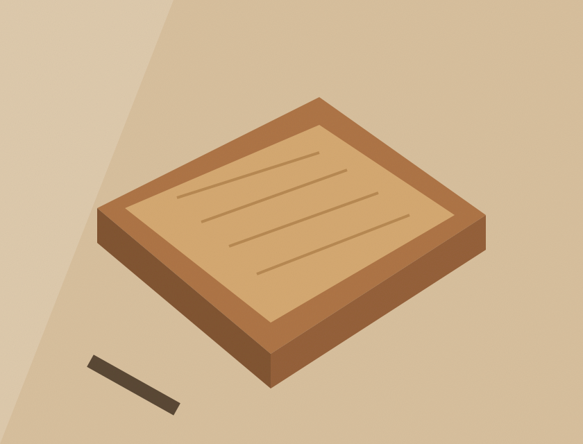

К содержимому
✳
Центр творческих
мастерских
Меню
Мастер-классы
Преподаватели
Расписание
Сертификаты
Журнал
Контакты
✳
Из жизни мастерской
Практика · 5 минут
Почему глина помогает замедлиться
Читать историю ↗
Вдохновение · 5 минут
Как перестать бояться чистого холста
Читать историю ↗

Мастерская · 5 минут
Дерево: материал с историей
Читать историю ↗